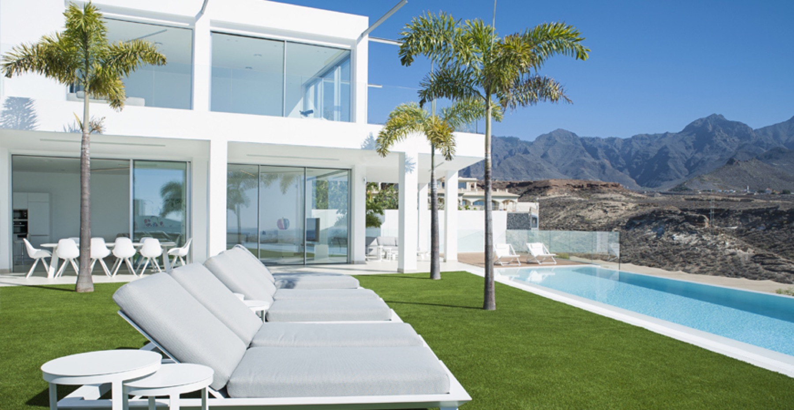
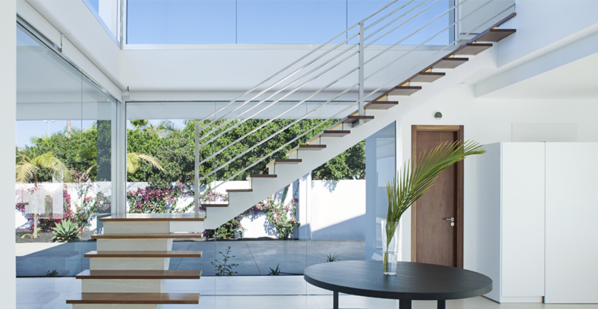
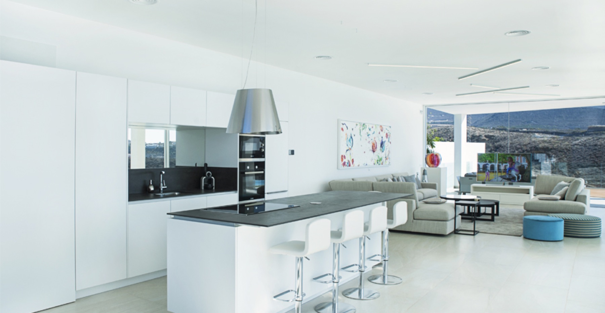

Villa Malibu followed Villa Infiniti one year later. Ground broken in 2016, completed end of 2017, sold late 2018. A three-year build — adjacent plot, larger footprint, the same hands-on supervision. Four en-suite bedrooms, 350 m² of interior on a 2,500 m² plot, heated pool, landscaped garden. By the time it handed over, TRI had developed and delivered four houses from raw land. Villa Malibu llegó un año después de Villa Infiniti. Obras comenzadas en 2016, finalizadas a finales de 2017, vendida a finales de 2018. Tres años de obra — parcela adyacente, mayor superficie, la misma supervisión cercana. Cuatro dormitorios en suite, 350 m² de interior sobre una parcela de 2.500 m², piscina climatizada, jardín paisajístico. Cuando se entregó, TRI había promovido y entregado cuatro casas desde cero.
No longer availableYa no disponible





One year into Villa Infiniti, Stazio started the second. Adjacent plot — 2,500 m² this time, a third larger than Infiniti. Same build approach: acquisition, architectural direction, site supervision, final handover. Two projects on site at the same time, the kind of overlap only a developer who lives in the houses he builds can pull off.
Ground broken 2016. Shell up through 2017. Interior and garden through to late 2017. The house was ready before the buyer was — it sat finished for most of 2018 while Stazio waited for the right owner, not the fastest one. Villa Malibu sold late 2018. The new owner moved in that month.
By the time Malibu handed over, TRI's developer track record was four houses from raw land — La Maleza (2002), the earlier Macaronesia project, Infiniti (2017), and Malibu (2018). Villa Arizona followed in 2023, Villa Bali in 2024.
Un año después de empezar Villa Infiniti, Stazio arrancó la segunda. Parcela adyacente — 2.500 m² esta vez, un tercio más que Infiniti. El mismo enfoque de obra: adquisición, dirección arquitectónica, seguimiento en obra, entrega final. Dos promociones en obra al mismo tiempo, el tipo de solape que solo puede gestionar un promotor que vive en las casas que construye.
Obras comenzadas en 2016. Estructura levantada a lo largo de 2017. Interior y jardín terminados a finales de 2017. La casa estuvo lista antes que el comprador — se mantuvo terminada buena parte de 2018 mientras Stazio esperaba al propietario adecuado, no al más rápido. Villa Malibu se vendió a finales de 2018. El nuevo propietario entró a vivir ese mismo mes.
Cuando Malibu se entregó, el historial de promociones de TRI era de cuatro casas desde cero — La Maleza (2002), el proyecto anterior de Macaronesia, Infiniti (2017) y Malibu (2018). Villa Arizona siguió en 2023, Villa Bali en 2024.
Villa Malibu is no longer on the market — it was handed over in late 2018 and hasn't returned. It sits on this page as a reference project. If you're considering commissioning TRI to develop a house from raw land — Villa Malibu is the kind of brief we know how to deliver, down to the point of waiting for the right owner rather than the first one. Talk to us.
Villa Malibu ya no está en el mercado — se entregó a finales de 2018 y no ha vuelto. Aparece aquí como proyecto de referencia. Si te planteas encargar a TRI el desarrollo de una casa desde cero — Villa Malibu es exactamente el tipo de encargo que sabemos ejecutar, incluso hasta el extremo de esperar al propietario adecuado en lugar de al primero. Hablemos.
Villa Malibu is sold, but this is exactly the kind of project TRI still develops — land acquired, house built to brief, delivered finished. Stazio replies personally within the day. Villa Malibu está vendida, pero este es exactamente el tipo de proyecto que TRI sigue promoviendo — parcela adquirida, casa construida a medida, entregada terminada. Stazio responde personalmente en el día.